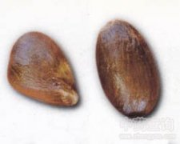

凤眼果

拼音
Fènɡ Yǎn Guǒ
别名
频婆果（《岭外代答》），九层皮（《君子堂日询手镜》），罗晃子（《纲目》），潘安果（《生草药性备要》），七姐果、富贵子（《广州植物志》）。
来源
为梧桐科植物苹婆的种子。
生境分布
野生山坡林内或灌丛中，亦有栽培。分布广东、广西、贵州等地。
药材特点
苹婆（《植物名实图考》） 乔木，高达10米。树皮褐色。叶纸质，阔矩圆形至矩圆状椭圆形，长8～25匣米，宽5～15厘米，先端渐尖或钝，基部钝，秃净；叶柄长2.5～5厘米。圆锥花序下垂，长8～28厘米；花杂性，无花冠；花萼粉红色，5裂至中部，裂片三角状条形，被短柔毛；雄蕊柱柔弱，弯曲；雌花少数，子房有毛，具柄，5裂，花柱弯曲。蓇葖革质，卵状，长4～8厘米，宽2.5～3.5厘米，具喙，熟时暗红色，被短绒毛。种子1～5颗，椭圆球形，暗栗色。花期5月。果期6～7月（贵州）。
性状
性状鉴别 种子椭圆球形，黑褐色或暗栗色，直径约1.5cm。气微，味淡。
性味
甘，温。 ①姚可成《食物本草》："甘，温。" ②《生草药性备要》："甘，平。"
功能主治
温胃，杀虫。治虫积腹痛，翻胃吐食，疝痛。 ①姚可成《食物本草》："治脏腑生虫及小儿食泥土，腹痛，癖块积硬。养肝胆，明目去翳，止咳退热，解利风邪，消烦降火。" ②《生草药性备要》："治小儿生天婆究（小儿烂头疡）煅存性，开油搽；消热气，煲肉食。"
用法用量
内服：煎汤或研末为散。外用：煅存性研末调搽。
化学成分
无化学成分数据
药理作用
1：无药理作用数据
摘录
《中药大辞典》